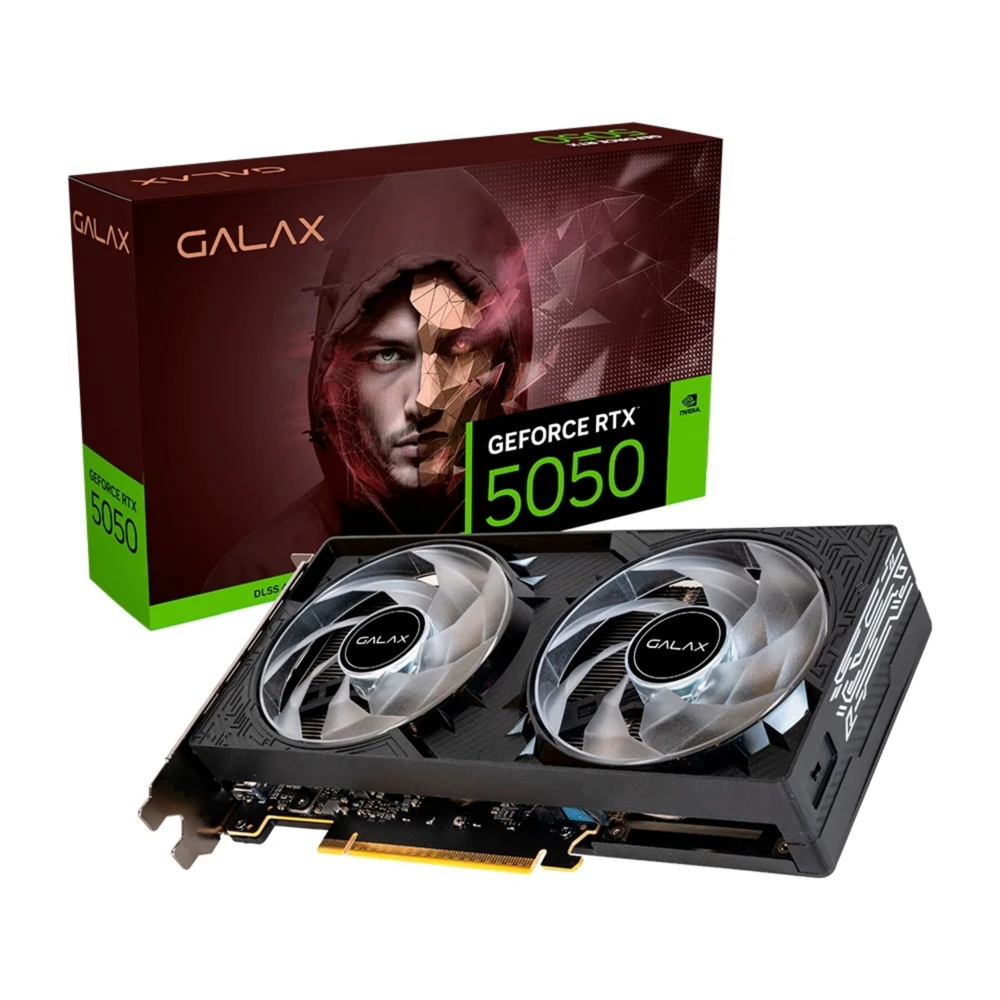

A Placa de Vídeo GALAX NVIDIA GeForce RTX 5050 1-Click OC TecLab Lite é uma placa de vídeo para PC gamer. 8GB, GDDR6, 128-Bits, Ray Tracing, DLSS 4, DLSS. Confirme a potência da fonte e o espaço do gabinete antes de comprar.
Você fala direto com nosso time pelo WhatsApp, do começo ao fim — para tirar dúvida, fechar o pedido e acompanhar a entrega. O prazo é de até 7 dias úteis, contado a partir da transportadora.
Você tem a garantia legal de 90 dias contra defeitos, garantida pelo Código de Defesa do Consumidor, e 7 dias para troca ou devolução após o recebimento. Todos os produtos são novos, lacrados e originais, vindos de fornecedores autorizados, e a nota fiscal sai no seu nome, o que dá acesso à garantia do fabricante.
Temos técnicos em informática: montagem, configuração, otimização de desempenho, backup de dados e cabeamento estruturado — para computadores de uso pessoal, gamer e de escritório.